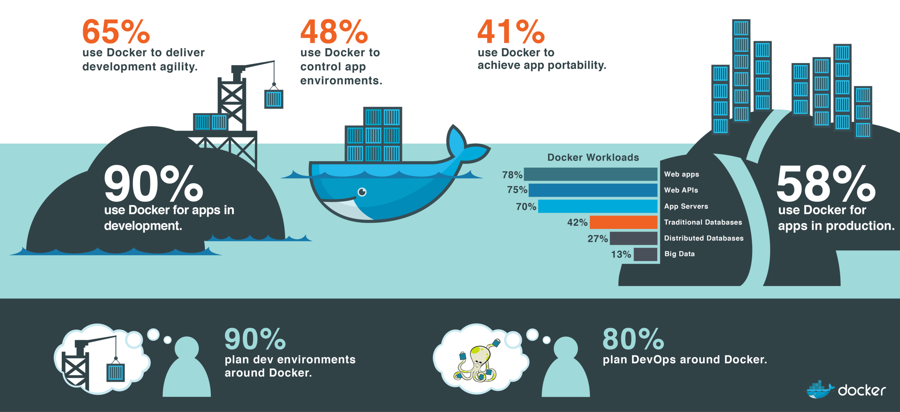

What is Docker?
Agenda
- Why containers?
- What is Docker?
- The Docker fundamentals
- Architecture
- Images, Container & Layers
- Dockerfile
- Using
dockercommand
- Registry
- Volumes
- Networking
- Service
- The world around of Docker
Run this cotainer
$ docker run -ti --rm -v /var/run/docker.sock:/var/run/docker.sock -p 57575:57575 -p 3000:3000 furikuri/docker-workshop
The Challenge

The Matrix from Hell

Cargo Transport Pre-1960
Also a Matrix from Hell

Solution: Intermodal Shipping Container

Docker is a Container System for Code

Docker Eliminates the Matrix from Hell

Containership + Harbour = Docker?
source: flickr.com/28169156@N03/26075913423 (cc)Benefits
- Same environment
- Sandbox projects
- It just works!

VIRTUAL MACHINES
Virtual machines include the application, the necessary binaries and libraries, and an entire guest operating system -- all of which can amount to tens of GBs.

CONTAINERS
Containers include the application and all of its dependencies --but share the kernel with other containers, running as isolated processes in user space on the host operating system. Docker containers are not tied to any specific infrastructure: they run on any computer, on any infrastructure, and in any cloud.
Docker
- "Docker is the world's leading software containerization platform" - docker.com
- Open Source
- March 2013, dotCloud => Docker Inc.
- Written in Go
- Version 1.12
- 35,837 Stars; 14,484 Closed PR; 8,253 Contributors
- $120 million venture capital
Octoverse 2016
Architecture
- Docker daemon
- Docker client
- Docker registry
Underlying technologies
-
cgroups
- CPU
- Memory
- Freezing
- Unfreezing
-
namespaces
- Isolation (e.g. filesystem, users, networking, processes)
-
Union File System (UFS)
- Store layers
Images, Layers & Containers

Images, Layers & Containers

Images, Layers & Containers
The Dockerfile
############################################################ # Dockerfile to build MongoDB container images # Based on Ubuntu ############################################################ FROM ubuntu MAINTAINER Example McAuthor RUN apt-get update ################## BEGIN INSTALLATION ###################### # Install MongoDB Following the Instructions at MongoDB Docs # Ref: http://docs.mongodb.org/manual/tutorial/install-mongodb-on-ubuntu/ RUN apt-key adv --keyserver hkp://keyserver.ubuntu.com:80 --recv 7F0CEB10 RUN echo 'deb http://downloads-distro.mongodb.org/repo/ubuntu-upstart dist 10gen' | tee /etc/apt/sources.list.d/mongodb.list RUN apt-get update RUN apt-get install -y mongodb-10gen RUN mkdir -p /data/db ##################### INSTALLATION END ##################### EXPOSE 27017 CMD ["--port 27017"] ENTRYPOINT usr/bin/mongod
$ docker build -t my_mongo . $ docker run my_mongo
The build context
- Dockerfile + build context
-
Build context = set of local files or directories
- files + dir => tarball => Docker daemon
- Can be referenced with ADD and COPY
- .dockerignore
- Dockerfile can also start with http or https
-
Build context can also be a git repository
- github.com/, _git@, _git://
- docker build - < context.tar.gz
Caching
- Each layer will be cached
-
Used for an instruction if
- previous instruction was found in cache
- there is a layer in the cache with same instruction and parent layer
- ADD and COPY invalidated if checksum or metadata has changed
- docker build --no-cache ...
Common Docker commands
# Create and start container $ docker run -p 8080:8080 -d -v /host/dir:/container/dir --name my_container image-name # Build image $ docker build -f /path/to/Dockerfile -t my_image /path/to/build-context # Managing container $ docker stop/start/restart/kill <container_name || container_id> # Container information $ docker logs/inspect/history <container_name || container_id> # Docker information $ docker ps/top/images
Docker registry
$ docker pull ubuntu
$ docker pull registry-1.docker.io/distribution/registry:2.1
- storage and content delivery system
- available in different tagged versions
- Docker Hub
- Docker Store
Docker volumes
- outside the UFS
- normal directories on the host that are bind mounted
$ docker run -it --name container-test -h CONTAINER -v /data debian /bin/bash
$ docker inspect -f {{.Volumes}} container-test
$ docker run -it --name container-test -h CONTAINER -v /home/theo/data:/data debian /bin/bash
Data volume containers
- data share between containers
- use from non-persistent containers
- remove containers db1 and db2 => the volumes will not be deleted
$ docker create -v /dbdata --name dbstore training/postgres /bin/true $ docker run -d --volumes-from dbstore --name db1 training/postgres $ docker run -d --volumes-from dbstore --name db2 training/postgres $ docker run -d --volumes-from db1 --name db3 training/postgres
Docker network
List network
$ docker network ls
Inspect network
$ docker network inspect bridge
Create network
$ docker network create -d bridge my-bridge-network
Docker network
-
bridge
- default
- great for dev
-
host
- share network namespaces of the host
-
container
- networking namespace from another container
- preconfigured containers
-
none
- turns off networking completely
-
overlay
- VXLAN
- conntect hosts with their own IP and NAT for external
-
Custom network plugin
- flannel
- weave
- cannal
- project calico
Docker service
- part of Docker Swarm
# Create service
$ docker service create --name elasticsearch elasticsearch
# List all service
$ docker service ls
# List all tasks of a service
$ docker service ps elasticsearch
# Scale up/down
$ docker service update elasticsearch --replicas=10
# Remove service
$ docker service rm elasticsearch
Next steps
- Kubernetes
- Docker Cloud
- CoreOS
- Mesosphere
- ECS
- Deis
- Docker Swarm
- Hyper.sh
- ...
Docker in production
The Docker Survey 2016

source: docker.com
The Docker Survey 2016
The Docker Survey 2016

The Docker Survey 2016

Sources
This slides based on the template of docker-training/docker-present.